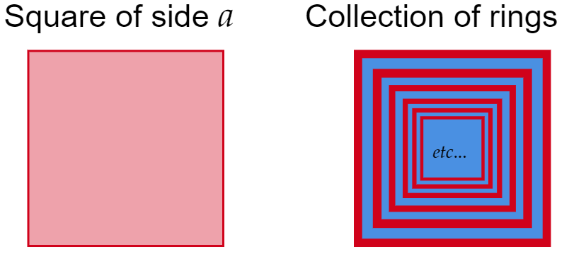
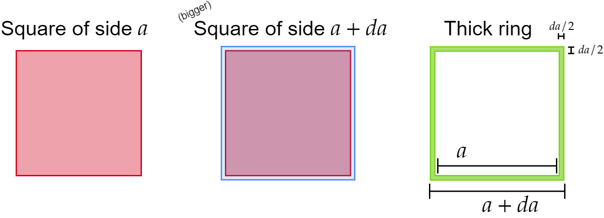
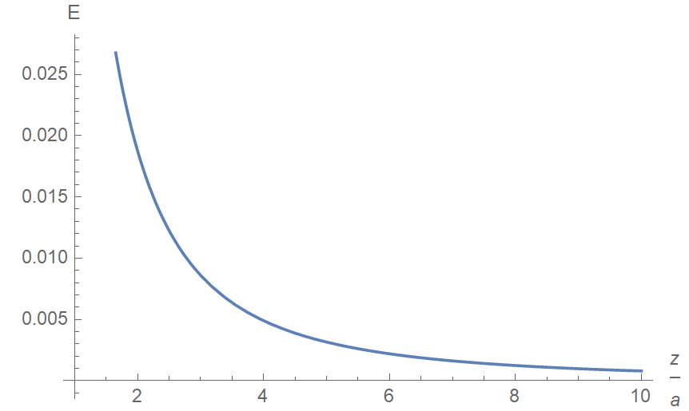
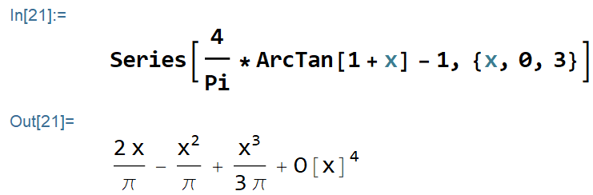

Find the electric field at a height $z $ above the center of a square sheet (side length $a $) carrying a uniform surface charge $\sigma $. Check your results for the limiting cases $a\rightarrow \infty $ and $z>>a $.
Answer:
\[\frac{\sigma }{2\epsilon _0}\left\lbrace \frac{4}{\pi }\arctan \left( \sqrt{1+\frac{a^2 }{2z^2 }} \right) -1 \right\rbrace \]Start by reading the "Prologue to 2.46: The electric field of a square ring", as it will be crucial to this solution.
In physics, we can always brute force a problem. Even though this gives us a path to walk on, it doesn't necessarily mean it's the best path (or even then, a traversable path!). Brute forcing a problem will be like walking up Sandia on a straight line, rather than along the hiking trails. Most of you encountered this situation when solving this problem, so consider this solution instead.
This solution exemplifies two great principles in doing physics: recycling of already derived results and breaking a problem into simpler, smaller problems.
Notice that a square plate is nothing more than a collection of square rings, of increasing size, all centered at one point.
As such, instead of integrating over the square plate, let's add a bunch of infinitesimal square rings.
Recall from the prologue that the electric field (at a distance $z $ above from it) of a square ring of side $a $ is
\[ \mathbf{E}=\frac{1}{\pi \epsilon _0 }\frac{\lambda az}{ \left( z^2 +\frac{a^2 }{4} \right) \sqrt{z^2 +\frac{a^2 }{2}}}\hat{\mathbf{z}}\]To integrate over this, the only change we have to do is in on $\lambda $. The ring will now have a (very small) thickness, where if $a $ denotes the length of the (inner) side, then the outer side will be $a+da $, so the thickness is
\[\frac{da}{2} \]As such, we append the surface charge $\sigma $ and we get
\[\lambda \;\text{will be replaced by} \;\sigma \frac{da}{2} \]If this is not convincing, consider that the area of the thick ring is
\[\begin{split} (a+da)^2 -a^2 &= a^2 +2ada+da^2 -a^2 \\ &= 2ada+da^2\\ &{\approx} 2ada \end{split} \]So we get a thick ring total charge of $\sigma 2ada $.
Since the ring charge $4a\lambda $ has to be equal to that, it follows that $\lambda =\sigma \frac{da}{2}$. We all of this in mind, we have:
\[dE= \frac{\sigma }{2\pi \epsilon _0 }\frac{ az}{ \left( z^2 +\frac{a^2 }{4} \right) \sqrt{z^2 +\frac{a^2 }{2}}}da\]Let's integrate this expression from $a=0 $ to $a=a $. To avoid confussion, let's relabel $a $ inside the integrand to $b $.
\[E = \frac{\sigma }{2\pi \epsilon _0 } \int_{b=0}^{a} \frac{ bz}{ \left( z^2 +\frac{b^2 }{4} \right) \sqrt{z^2 +\frac{b^2 }{2}}}db \]Let $w=b^2 /4 $. This gives $dw=\frac{b}{2}db $, so $bdb = 2dw $:
\[\begin{split} E &= \frac{\sigma }{2\pi \epsilon _0 } \int_{b=0}^{a} \frac{ bz}{ \left( z^2 +\frac{b^2 }{4} \right) \sqrt{z^2 +\frac{b^2 }{2}}}db\\ &= \frac{\sigma }{2\pi \epsilon _0 }2z \int_{w=0}^{a^2 /4} \frac{dw}{(z^2 +w)\sqrt{z^2 +2w}} \end{split} \]Let $u= \sqrt{z^2 +2w} $, so that $\sqrt{z^2 +2w}du=dw $:
\[\begin{split} E &= \frac{\sigma }{2\pi \epsilon _0 }2z \int_{w=0}^{a^2 /4} \frac{dw}{(z^2 +w)\sqrt{z^2 +2w}}\\ &= \frac{\sigma }{2\pi \epsilon _0 }2z \int_{u=z}^{\sqrt{z^2 +\frac{a^2 }{2}}} \frac{du}{(z^2 +w)} \\ &= \frac{\sigma }{2\pi \epsilon _0 }2z \int_{u=z}^{\sqrt{z^2 +\frac{a^2 }{2}}} \frac{du}{(z^2 +\frac{u^2 -z^2 }{2})} \\ &= \frac{\sigma }{2\pi \epsilon _0 }2z \int_{u=z}^{\sqrt{z^2 +\frac{a^2 }{2}}} \frac{du}{\frac{1}{2}(z^2 +u^2) }\\ &= \frac{\sigma }{2\pi \epsilon _0 }4z\int_{u=z}^{\sqrt{z^2 +\frac{a^2 }{2}}} \frac{du}{(z^2 +u^2) } \end{split} \]Let $v=u/z $, so $du=zdv $:
\[\begin{split} E &= \frac{\sigma }{2\pi \epsilon _0 }4z \int_{u=z}^{\sqrt{z^2 +\frac{a^2 }{2}}} \frac{du}{(z^2 +u^2) }\\ &= \frac{\sigma }{2\pi \epsilon _0 }4z \int_{v=1}^{\sqrt{z^2 +\frac{a^2 }{2}}/z} \frac{zdv}{(z^2 +z^2 v^2) }\\ &= \frac{\sigma }{2\pi \epsilon _0 }4z\frac{1}{z} \int_{v=1}^{\sqrt{z^2 +\frac{a^2 }{2}}/z} \frac{dv}{(1 + v^2) } \\ &= \frac{\sigma }{2\pi \epsilon _0 }4z\frac{1}{z} \cdot \arctan (v) \Big|_{1}^{\sqrt{z^2 +\frac{a^2 }{2}}/z} \\ &= \frac{\sigma }{2\pi \epsilon _0 }4z\frac{1}{z} \cdot \left( \arctan \left( \sqrt{z^2 +\frac{a^2 }{2}}/z \right) -\arctan (1) \right) \\ &= \frac{\sigma }{2\pi \epsilon _0 }4z\frac{1}{z} \cdot \left( \arctan \left( \sqrt{\frac{z^2 +\frac{a^2 }{2}}{z^2 }} \right) -\frac{\pi }{4} \right)\\ &= \frac{\sigma }{2\pi \epsilon _0 }4z\frac{1}{z} \cdot \left( \arctan \left( \sqrt{1+\frac{a^2 }{2z^2 }} \right) -\frac{\pi }{4} \right)\\ &= \frac{2\sigma }{\pi \epsilon _0 }\cdot \left( \arctan \left( \sqrt{1+\frac{a^2 }{2z^2 }} \right) -\frac{\pi }{4} \right)\\ &= \frac{2\sigma }{\pi \epsilon _0 }\cdot \frac{\pi }{4} \left(\frac{4 }{\pi} \arctan \left( \sqrt{1+\frac{a^2 }{2z^2 }} \right) -1 \right)\\ &= \frac{\sigma }{2 \epsilon _0 }\cdot \left(\frac{4 }{\pi} \arctan \left( \sqrt{1+\frac{a^2 }{2z^2 }} \right) -1 \right) \end{split} \]Which is exactly the expression we were looking for.
With $z $ rescaled by $a $, we see that $E$ goes to zero as $z\rightarrow \infty $:
Let's now check the two limiting cases:
(1) When $a\rightarrow \infty $.
If we make the square sheet large enough, it should behave like an infinite plane with uniform charge $\sigma $. The argument inside the ArcTangent will go to infinity, and we have $\arctan (\infty )=\pi /2 $, so:
\begin{align*} \lim_{a\to \infty }E &= \frac{\sigma }{2\epsilon _0 } \left( \frac{4}{\pi }\frac{\pi }{2}-1 \right) \\ &= \frac{\sigma }{2\epsilon _0 } \end{align*}Which is the equation for the field of an infinite plane with uniform charge $\sigma $.
(2) When $z>>a $.
Intuition tells us that as we move far away, the (information of the) geometry of the charge configuration will be lost, so this square sheet will look like a point charge with total charge $a^2 \sigma $.
We Taylor expand:
Since $x=a^2 /2z^2 $ is small (since $z $ is much, much larger than $a $), we will just keep the first term and we get:
\[E_{z>>a} = \frac{1 }{2\pi \epsilon _0 }\frac{Q}{z^2 } \]Where $Q $ is the total charge of the square sheet:
\[Q=\sigma a^2 \]